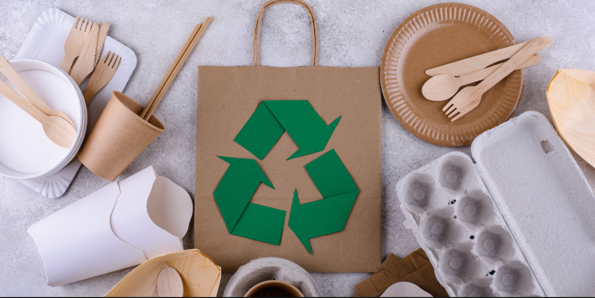
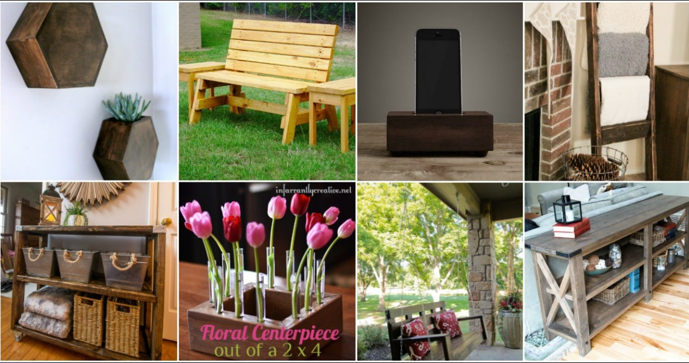
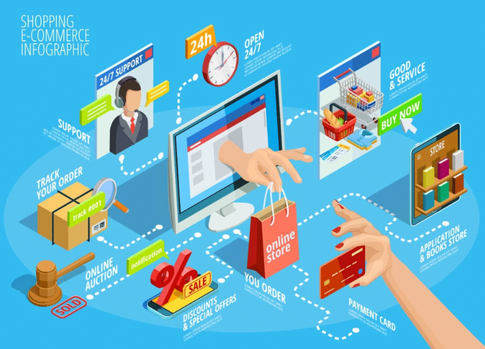
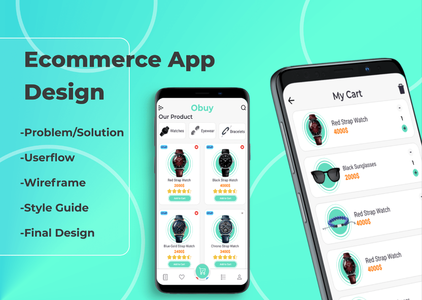

Eco-friendly Product Design
This project aims to design a sustainable, reusable shopping bag to reduce the widespread use of single-use plastic bags, which are a major environmental issue. Plastic bags take hundreds of years to decompose and contribute significantly to pollution. The reusable shopping bag is crafted from organic cotton, a biodegradable material that has a much lower environmental impact compared to conventional plastic bags. The design is both practical and eco-friendly, offering a spacious interior for carrying groceries while remaining lightweight and compact. It features reinforced handles for durability and folds into a small pouch, making it convenient for consumers to carry around in their bags or pockets. The sustainability aspect of this design is key. Organic cotton is not only biodegradable, but it also requires fewer pesticides and chemicals compared to regular cotton. By promoting the use of reusable bags, this product helps reduce plastic consumption and encourages more environmentally conscious consumer behavior. The bag is also machine washable, making it reusable for years, further reducing waste. The presentation of this design includes detailed sketches to visualize the shape and structure of the bag, 3D models to show its proportions, and a physical prototype made from organic cotton fabric. Through this project, I aim to showcase the importance of incorporating sustainable materials into everyday products and how simple changes, like switching to a reusable shopping bag, can have a profound impact on reducing plastic pollution.
DIY Furniture or Home Decor Project
The DIY Furniture or Home Decor Project involves building or repurposing furniture or decor items using sustainable materials, such as creating a coffee table from wooden pallets or designing wall art from recycled items. The process begins by gathering the necessary materials, like used wooden pallets or old household items, and preparing them for the project by cleaning, sanding, or cutting as needed. For a coffee table, the pallets are carefully stacked and assembled using screws and wood glue to form a sturdy base, with additional features like storage shelves or a smooth tabletop added for functionality. For a wall art piece, recycled materials such as bottle caps, old magazines, or metal scraps are arranged and attached in a creative design. The visual component of this project includes detailed photos at each stage: from the raw materials, through the steps of cutting, assembling, or painting, to the final completed piece. These images demonstrate the transformation of everyday items into functional and aesthetically pleasing decor. The presentation would also include explanations of the tools used (like saws, drills, or hot glue guns) and methods applied throughout the process. This DIY project highlights the creativity of upcycling materials and how simple, sustainable techniques can result in beautiful, eco-friendly furniture and home decor.
Launching an E-Commerce Business
This project involves creating a detailed plan for launching an e-commerce business. First, select a product or service to sell and conduct market research to understand your target audience and competitors. Then, choose an e-commerce platform (e.g., Shopify or WooCommerce) and design a user-friendly website with high-quality product images and smooth checkout processes. Next, you will develop a digital marketing strategy using SEO, social media, and email campaigns to attract customers. Logistics, such as inventory management, shipping, and customer service, will also be covered. Additionally, you’ll create a financial plan, including a budget and revenue goals. By the end of the project, you will have a comprehensive business plan and strategy for successfully launching an e-commerce store.
Creating an E-Commerce Mobile App
This project involves designing a concept for an e-commerce mobile app, aimed at enhancing the shopping experience on smartphones. And begin by choosing a niche or product category, such as fashion, gadgets, or handmade goods, and then outline the core features of the app. These features could include product browsing, a secure payment gateway, a shopping cart, order tracking, and user reviews. The app's user interface should be intuitive, with smooth navigation and a responsive design to ensure a seamless shopping experience. You will also create wireframes or prototypes that display how each screen in the app will function and look. In addition to designing the app, the project includes developing a marketing strategy to promote the app, such as app store optimization (ASO), social media campaigns, and email marketing. You will also plan the logistical aspects of the app, such as inventory management, order fulfillment, and customer support. The presentation of the project will showcase the app's features, user interface, and marketing strategies, emphasizing how a mobile e-commerce app can improve user engagement and expand a business's reach. This project offers insight into the development and marketing of mobile e-commerce platforms, which are increasingly important in today's retail environment.
